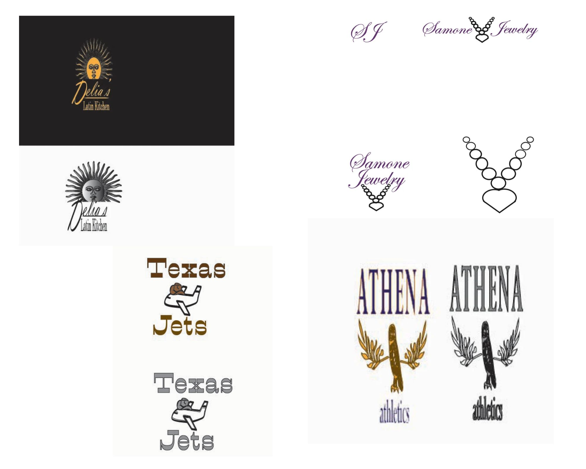
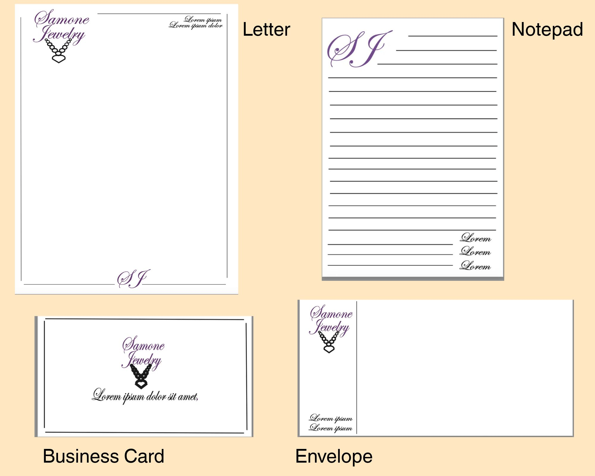
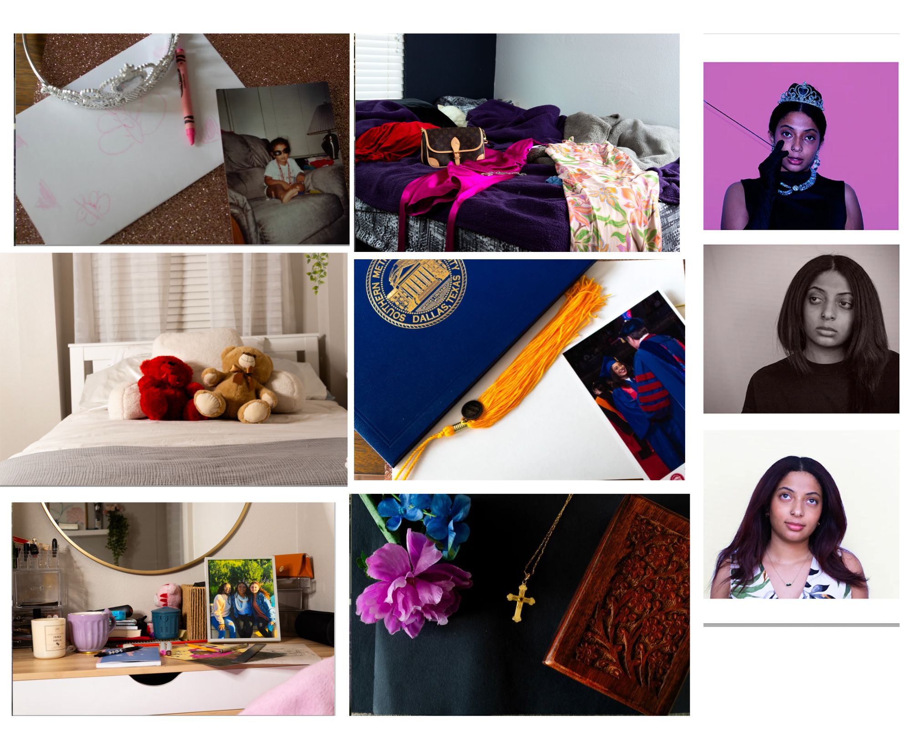
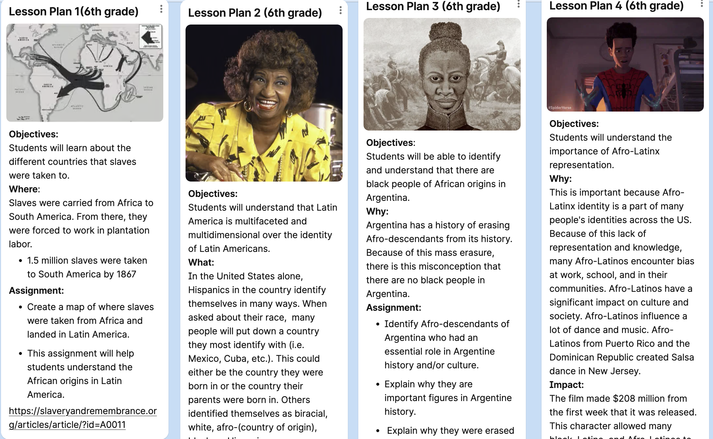
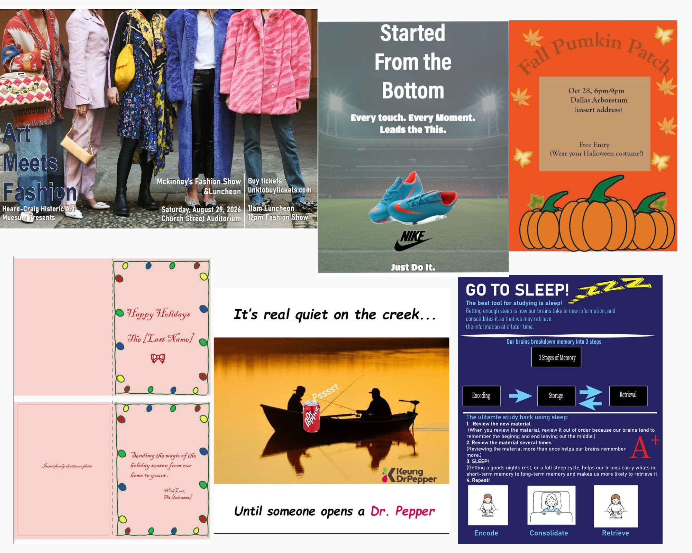
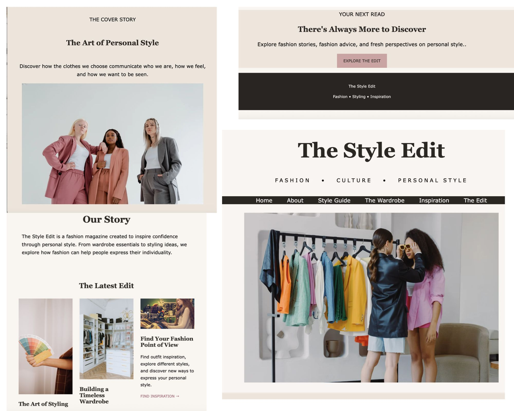
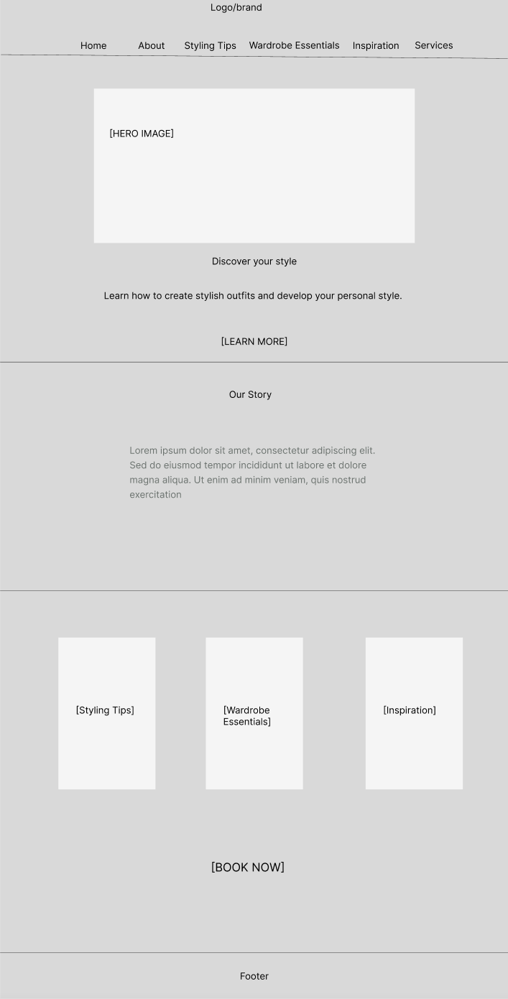

Logo Design
Visual identity and brand development
The Architecture of Desire
THE CREATIVE ARCHIVE
A collection of visual explorations, digital experiences, and creative projects shaped by my interest in design, culture, communication, and brand identity.
01 / BRAND IDENTITY
Logo development and stationery designs exploring visual identity, typography, and cohesive branding.

Visual identity and brand development

A cohesive collection of branded materials
02 / PHOTOGRAPHY
A photographic exploration of girlhood, identity, and the ways girls are represented through imagery.

A photographic collection exploring girlhood, identity, and visual representation.
03 / CULTURAL RESEARCH
An independent study developed during my Spanish major in response to gaps in the representation and education surrounding Afro-Latino history. Through research and digital storytelling, this project explores Afro-Argentinian identity, cultural contributions, and the importance of representation. The research was translated into four lesson plans designed to introduce sixth-grade students to Afro-Latino history and identity.

Four sixth-grade lesson plans exploring Afro-Latino identity and history

A collection of visual communication projects, including event posters, advertisements, a greeting card, and an infographic, created using Adobe Creative Cloud.
05 / DIGITAL DESIGN
A collection of website and landing page projects designed and developed using Figma, HTML, CSS, and Notepad++. From planning page layouts and establishing visual hierarchies in Figma to writing code and styling web pages, these projects demonstrate my approach to creating cohesive digital experiences through visual communication, thoughtful structure, and user-centered design.

Fashion magazine website design

Page layouts and digital visual communication
Digital layout and content presentation